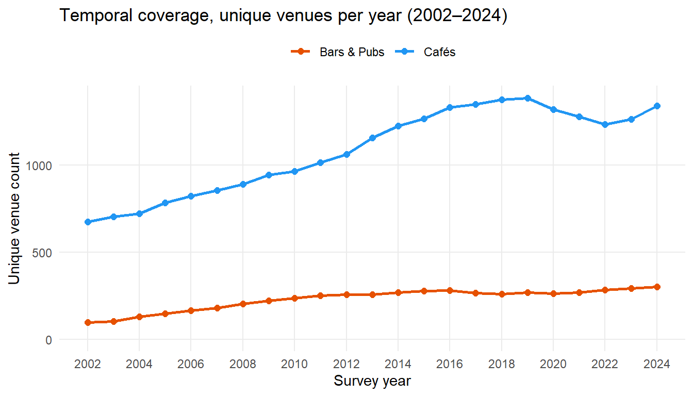
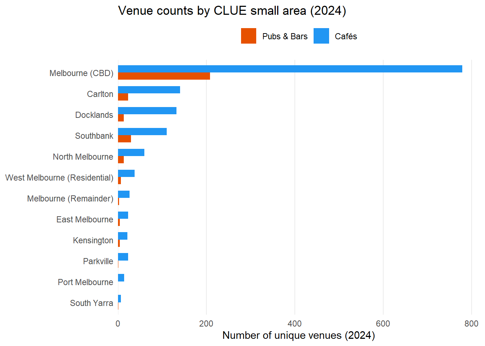
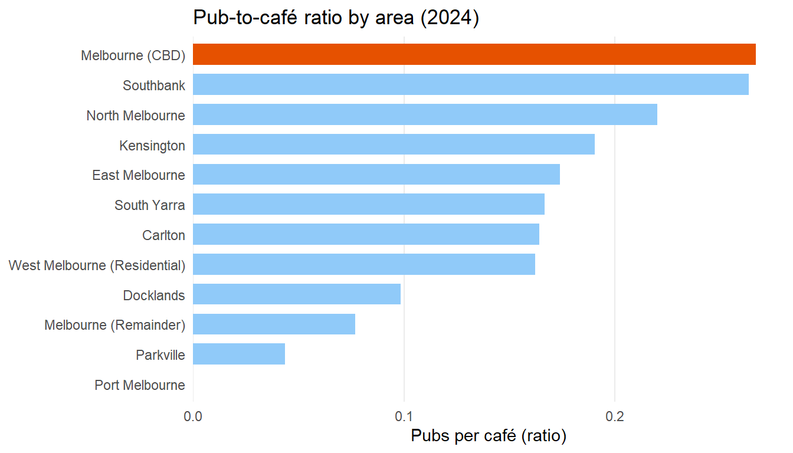
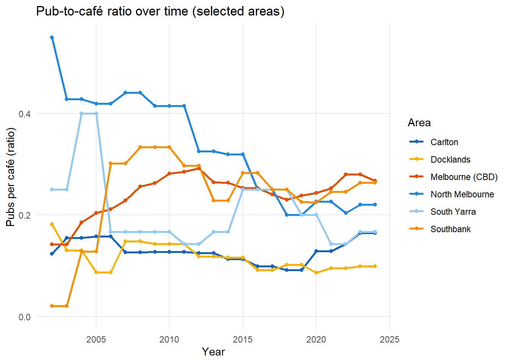
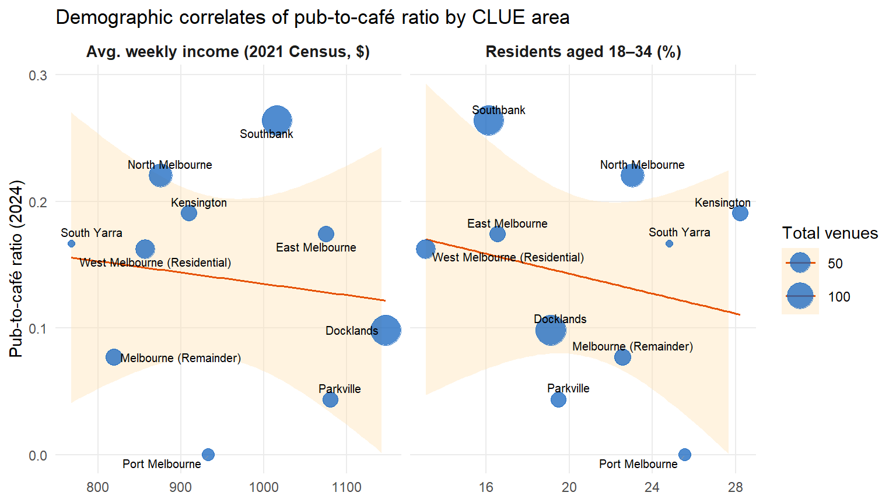

Cafés Vs. Pubs in Melbourne
1 Introduction
Project Title: Cafés Vs. Pubs in Melbourne
Melbourne is internationally recognised as one of the world’s great coffee cities, yet it also maintains a deeply ingrained pub culture. Recent research indicates that younger Australians are drinking less alcohol than previous generations [@aihw2024], which raises an interesting question about how this cultural shift may be reflected in the physical landscape of Melbourne’s hospitality sector. This project explores the distribution of cafés and pubs across the City of Melbourne’s defined local areas, examining how these venues are distributed, how their relative proportions have changed over time, and whether the balance between café and pub culture relates to the socioeconomic and demographic character of different neighbourhoods.
The findings are relevant to a broad range of audiences: potential hospitality business owners and investors seeking to identify underserved markets, urban planners and local government officials interested in how venues shape neighbourhood character, and researchers studying the relationship between place-based consumption patterns and demographics.
Questions addressed in this report:
- How does the distribution of cafés and pubs vary across different areas of Melbourne?
- How do pub-to-café ratios differ across Melbourne areas, and how have these ratios changed over time?
- How do income levels and age distributions relate to the pub-to-café ratio across different areas?
2 Data Wrangling and Checking
2.1 Data Sources
Three data sources were used in this analysis:
Source A – City of Melbourne: Cafés and Restaurants with Seating Capacity (2002–2024). This tabular dataset contains 66,356 observations across 15 columns. Each row represents a specific seating-type record for a food/beverage venue in a given census year. Key attributes include Trading name, Industry (ANZSIC4) description, Number of seats, Seating type, CLUE small area, Latitude, and Longitude. Data is sourced from the City of Melbourne’s Census of Land Use and Employment (CLUE). Available at: https://data.melbourne.vic.gov.au/explore/dataset/cafes-and-restaurants-with-seating-capacity
Source B – City of Melbourne: Bars and Pubs with Patron Capacity (2002–2024). This tabular dataset contains 5,304 observations across 12 columns. Each row records a bar or pub in a given census year with attributes including Trading name, Number of patrons, CLUE small area, Latitude, and Longitude. Available at: https://data.melbourne.vic.gov.au/explore/dataset/bars-pubs-patron-capacity
Source C – ABS Census General Community Profile G04 and G17 (2016, 2021). These are tabular datasets sourced from the Australian Bureau of Statistics Census DataPacks at Statistical Area Level 2 (SA2). G04 contains age-by-sex data; G17 (A, B, C) contains individual weekly income by age and sex. Each dataset has 464 rows (2016) or 524 rows (2021), corresponding to Victorian SA2 regions, and hundreds of columns representing demographic breakdowns. Available at: https://www.abs.gov.au/census/find-census-data/datapacks
2.2 Data Wrangling
The data wrangling process involved the following key steps:
Source A & B – Venue data: Source A uses a single ANZSIC code (4511, Cafes and Restaurants) that conflates two distinct venue types. To isolate cafés and exclude restaurants from the analysis, a name-based exclusion filter was applied to the trading name field. Rather than requiring names to contain café-positive keywords (e.g. “café”, “coffee”), which would incorrectly discard genuine cafés with non-descriptive names, the filter removes records whose names contain terms unambiguously associated with restaurants and non-café premises, including “restaurant”, “ristorante”, “pizzeria”, “sushi”, “ramen”, “brasserie”, “izakaya”, and compound ethnic cuisine qualifiers such as “Indian restaurant” and “Chinese restaurant”. Compound terms were used deliberately to avoid false positives (e.g. a venue named “Thai Basil Café” would not be excluded). This approach removed approximately 7,992 records (16% of ANZSIC 4511 entries) identified as clear restaurants, retaining 1,339 of 1,554 unique venues in the 2024 survey year. The remaining records may still include some casual dining venues with ambiguous names; this is acknowledged as a limitation of name-based classification in the absence of a finer ANZSIC subcategory. Takeaway food services (ANZSIC 4512) and accommodation were excluded by the ANZSIC filter. Source A also contains multiple rows per venue per year due to separate records for indoor, outdoor, and other seating types; these were aggregated to unique venue-year records by grouping on trading name, area, and year. The bars dataset required only deduplication, as each row already represents a distinct licensed premises.
Source C – Census data: The G04 files (age distributions) and G17 files (weekly income) were each split across multiple CSV files (A, B, C) and required column-binding after filtering to the 19 SA2 regions within the City of Melbourne Local Government Area (identified by codes beginning with 2010). A manual SA2-to-CLUE area crosswalk was constructed using ABS geographic correspondences to link census data to the City of Melbourne’s CLUE small area boundaries, enabling integration with Sources A and B. Weighted average weekly income was computed from the G17 income bracket counts using bracket midpoints as weights, excluding “not stated” responses from the denominator.
2.3 Data Checking
2.3.1 Missing Values
Missing values are confined entirely to the spatial coordinate columns (Latitude and Longitude). The cafés dataset has 377 records with missing coordinates, and the bars dataset has 20. All other fields, trading name, CLUE area, seating/patron capacity, are fully complete across both datasets. Records with missing coordinates are retained for count-based and temporal analyses but excluded from any spatial point mapping, as their area-level CLUE classification is still valid for aggregation purposes.
2.3.2 Temporal Consistency
Both datasets cover every survey year from 2002 to 2024 without gaps, confirming complete temporal coverage. Café counts grow steadily from 675 in 2002 to a peak of 1,385 in 2019, followed by a visible dip in 2020–2021 consistent with pandemic-related business closures, before recovering to 1,339 by 2024. Bar counts follow a similar upward trend, though more modest in scale, with no equivalent pandemic dip, likely reflecting pubs’ ability to pivot to takeaway liquor sales during lockdowns. No year contains implausibly few or many records, and no survey year is duplicated.
2.3.3 Venue Counts by Area
| Area | Cafés | Bars & Pubs | Total | Pub-to-café ratio |
|---|---|---|---|---|
| Melbourne (CBD) | 779 | 208 | 987 | 0.27 |
| Carlton | 140 | 23 | 163 | 0.16 |
| Docklands | 132 | 13 | 145 | 0.10 |
| Southbank | 110 | 29 | 139 | 0.26 |
| North Melbourne | 59 | 13 | 72 | 0.22 |
| West Melbourne (Residential) | 37 | 6 | 43 | 0.16 |
| Melbourne (Remainder) | 26 | 2 | 28 | 0.08 |
| East Melbourne | 23 | 4 | 27 | 0.17 |
| Kensington | 21 | 4 | 25 | 0.19 |
| Parkville | 23 | 1 | 24 | 0.04 |
| Port Melbourne | 14 | 0 | 14 | 0.00 |
| South Yarra | 6 | 1 | 7 | 0.17 |
Table 1 confirms that Melbourne (CBD) accounts for the overwhelming majority of venues in both categories, with 779 cafés and 208 bars, far exceeding any other area. Carlton and Docklands are the next most venue-dense areas for cafés, while Southbank has a disproportionately high bar count (29) relative to its café count (110), giving it the second-highest pub-to-café ratio (0.26) after the CBD (0.27). Port Melbourne has no recorded bars in 2024. South Yarra, despite its well-known hospitality scene, has very few venues within the City of Melbourne boundary, reflecting that most of its venues fall just outside the CLUE survey area.
3 Data Exploration
The exploration addresses the three research questions in sequence, building from spatial distribution to temporal trends and finally to demographic correlates.
3.1 Q1: How does the distribution of cafés and pubs vary across Melbourne areas?
A grouped horizontal bar chart is used here because the question asks about the distribution of two venue types across a set of named categorical areas. Horizontal orientation makes the area labels readable without rotation. Grouping the two bars side-by-side rather than stacking them allows direct length comparison between cafés and pubs within each area, which is the primary comparison of interest. Areas are ordered by total venue count so that the most active areas appear at the top.

Figure 2 reveals a pronounced spatial concentration of both venue types. The Melbourne CBD alone accounts for the vast majority of venues in the dataset. Carlton and Southbank follow as the next most venue-dense areas. At the opposite extreme, West Melbourne (Industrial), Parkville, and Kensington contain very few venues of either type, reflecting their primarily industrial or institutional land uses.
A key visual pattern is that cafés consistently outnumber pubs and bars in every CLUE area, consistent with Melbourne’s strong coffee culture. However, the degree to which cafés dominate varies considerably by area, explored further in Question 2.
3.2 Q2: How do pub-to-café ratios differ across Melbourne areas, and how have these changed over time?
To move beyond raw counts and reveal relative pub presence, the pub-to-café ratio is computed for each area and displayed as a ranked horizontal bar chart. A single derived ratio variable reduces two counts to one comparable magnitude, making cross-area ordering immediately apparent through bar length, which encodes position on a common scale — the most effective channel for ordered quantitative data. A single uniform fill colour is used for all bars because the variable is continuous and ordinal colouring would impose an arbitrary category boundary. Only the top-ranked area is highlighted in orange to draw the reader’s eye without distorting the magnitude comparisons among the remaining bars.

Figure 3 shows that the pub-to-café ratio varies substantially across areas. The CBD and Southbank have the highest ratios (0.27 and 0.26 respectively), reflecting their role as entertainment precincts with large pub footprints. Residential areas such as Carlton, North Melbourne, and South Yarra have lower ratios, suggesting that café culture dominates in these neighbourhoods. This is consistent with the proposal that Melbourne’s coffee culture may be displacing pub culture in residential areas.
The temporal dimension of the question requires a line chart rather than a bar chart, as line charts are specifically suited to showing change over ordered time intervals. Six areas are selected to avoid overplotting while covering the range of area types: two high-ratio entertainment precincts (CBD and Southbank), one redeveloping precinct (Docklands), and three lower-ratio residential areas (Carlton, North Melbourne, South Yarra). Colour hue encodes area identity, which is a categorical distinction, consistent with the class guidance that hue is most effective for nominal groupings.

Figure 4 reveals a broadly declining pub-to-café ratio across most areas over the 22-year study period, with the most pronounced decline in Docklands and Southbank, two areas that have undergone major urban redevelopment. This trend is consistent with national findings on declining alcohol consumption among younger Australians [@aihw2024]. The CBD ratio has remained relatively stable, likely reflecting its persistent role as an entertainment and nightlife precinct. Carlton shows a consistently low and declining ratio throughout the period, reflecting its long-established status as a café-centric suburb.
3.3 Q3: How do income levels and age distributions relate to the pub-to-café ratio?
Two scatterplots are presented as facets, each placing a demographic variable directly on the x-axis against the pub-to-café ratio on the y-axis. This follows the principle that position on a common scale is the most effective encoding for communicating ordered quantitative relationships, more so than colour or size, which were used in earlier spatial designs. Combining the two panels also allows direct visual comparison of how strongly each demographic variable relates to the ratio. Points are sized by total venue count so that small areas do not carry the same visual weight as the CBD; area names are labelled directly on each point.

Figure 5 shows a modest positive relationship in its left panel between average weekly income and the pub-to-café ratio. The CBD and Southbank (the two largest points) sit at the high end of both axes, suggesting that affluent, mixed-use entertainment precincts sustain a greater pub presence. Carlton is a notable outlier: despite having a relatively high average income (driven by proximity to the university and gentrification), it has one of the lowest pub-to-café ratios, reflecting its deep-rooted café culture. The right panel tells a different story: there is no meaningful positive relationship between the share of young adults (18–34) and the pub-to-café ratio. If anything, the trend is slightly negative. Carlton and Parkville, both areas with large student and young adult populations, cluster in the lower-right, combining high youth share with low pub prevalence. This is consistent with national evidence of declining alcohol consumption among younger Australians [@aihw2024], and suggests that the presence of young residents does not translate into greater pub dominance at the area level. Taken together, the two panels indicate that precinct character and income level are more relevant to pub prevalence than the age structure of the resident population.
4 Conclusion
This analysis explored the distribution and relative balance of cafés and pubs across the City of Melbourne’s CLUE small areas using venue data from 2002–2024 and ABS Census data from 2016 and 2021.
In response to Question 1, cafés and pubs are concentrated heavily in the Melbourne CBD, with Carlton, Docklands, and Southbank as secondary clusters. Cafés consistently outnumber pubs in every CLUE area, reflecting Melbourne’s strong coffee culture.
Regarding Question 2, the pub-to-café ratio has declined across most areas over the 22-year study period, most dramatically in Docklands and Southbank. This temporal trend is consistent with a city-wide cultural shift towards café culture, aligning with national evidence of declining alcohol consumption in younger generations [@aihw2024].
For Question 3, the faceted scatterplot revealed that pub dominance is more strongly associated with higher-income entertainment precincts than with areas that have large young adult populations. Carlton and Parkville, both youth-heavy, have among the lowest pub-to-café ratios, while the CBD and Southbank combine high income with high pub presence. This challenges the intuitive assumption that younger residents drive pub culture, and instead points to the role of precinct character and income level.
The analysis was limited by the coarse spatial granularity of the CLUE area system (13 zones) and by the approximate SA2-to-CLUE crosswalk required to link census data. Future work could incorporate finer spatial units and foot traffic data to better account for non-resident demand.
5 Reflection
This project reinforced several key lessons about data visualisation and exploratory analysis. First, the choice of visual encoding matters enormously: switching from a raw count bar chart (Figure 2) to a ratio visualisation revealed a completely different spatial pattern, highlighting how the framing of a question shapes what we see. Second, the faceted scatterplot for Question 3 was chosen over spatial maps because the core question is about the relationship between demographics and the ratio, and position on a common scale encodes that relationship more precisely than colour or size on a map. This reflects the principle that just because data has a geographic component does not mean it should always be mapped.
In hindsight, using proper polygon boundary data (ABS SA2 shapefiles or City of Melbourne CLUE area boundaries) to produce choropleth maps would have made the spatial encoding even more precise and visually compelling. I would also have liked to explore venue density per capita rather than raw counts, which would account for the very different resident populations across areas. Finally, the name-based café filter, while defensible, could be improved with a supervised classification approach trained on a manually labelled sample of venue names.
6 Bibliography
7 Generative AI Declaration
Link 1 helped me write the R code to join ABS data G04 & G17